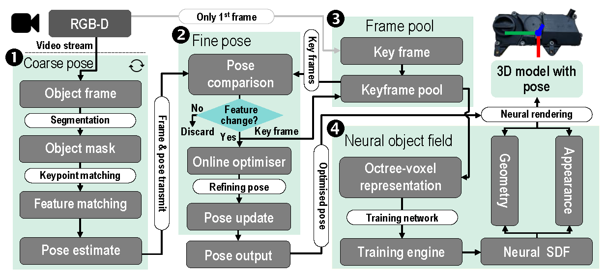
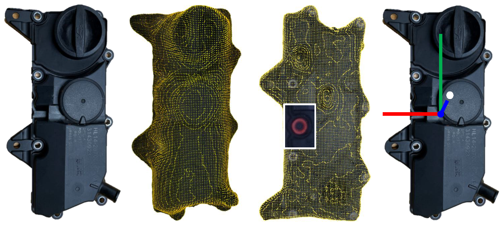
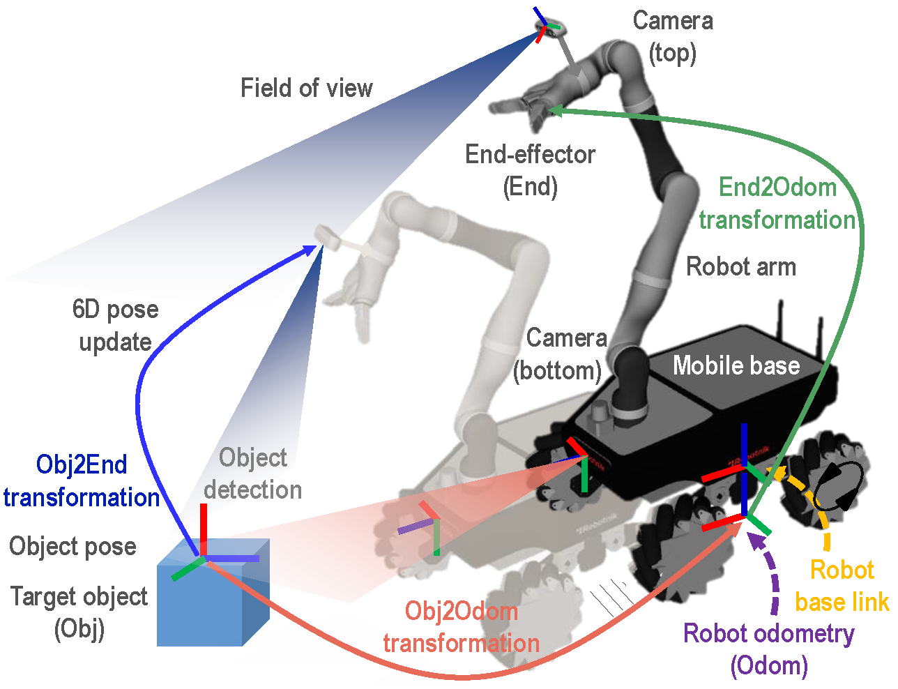
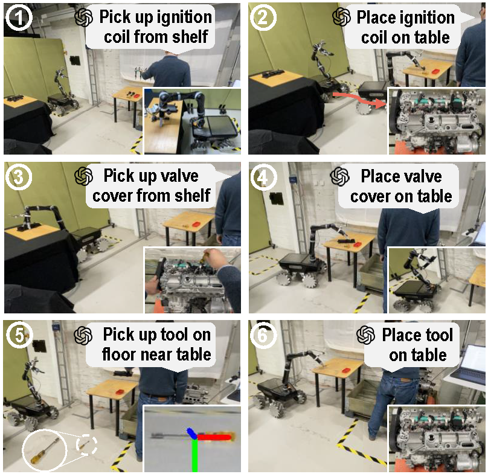

Neural representation of unknown objects
The goal is to build its optimal pose estimate for robotic manipulation when the CAD model and instance-level prior information of the object as well as camera poses are not available.

Autonomous robots that understand human instructions can significantly enhance the efficiency in human-robot assembly operations where robotic support is needed to handle unknown objects and/or provide on-demand assistance. This paper introduces a vision AI-based method for human-robot collaborative (HRC) assembly, enabled by a large language model (LLM). Upon 3D object reconstruction and pose establishment through neural object field modelling, a visual servoing-based mobile robotic system performs object manipulation and navigation guidance to a mobile robot. The LLM model provides text-based logic reasoning and high-level control command generation for natural human-robot interactions. The effectiveness of the presented method is experimentally demonstrated.
The workflow starts with RGB-D video collection of an object (e.g., a valve cover) along scanning paths, with the output being object frames and masks (a video frame includes a colour and a depth image). The frames and masks serve as the input for training a network to build the 3D model of the object with optimised pose. The object is subsequently detected by a camera-driven visual servoing system installed on the AMR. Separately, a laser scanner (Lidar) creates a simultaneous localisation and mapping (SLAM) map of the assembly environment along the moving path of the robot, enabling it to navigate safely around the assembly environment. Since the robot does not know initially what objects to be acted upon, object mapping with labelling is taken as landmarks. To control the robot for task execution, new capabilities of the LLM are explored to reason and extract control logic steps behind text instructions issued by a human operator. Finally, high-level control commands with vocabulary-based object indexing and mapping are used for the robot motion control and assembly task execution.
The goal is to build its optimal pose estimate for robotic manipulation when the CAD model and instance-level prior information of the object as well as camera poses are not available.
3D reconstruction and pose estimate for an object (valve cover): (Left-1) object image as ground truth; (left-2) & (left-3): mesh models rendered by point cloud (front & back); (right) object’s 6D pose with a grasping point (white dot).
By using Lidar data of scanning work environments, a Lidar-based SLAM system is developed to enable the robot in building a spatial map and localise itself on the map. Combining the robot’s position and pose with the location data of the object, the robot will know the obstacle’s spatial location and its geometrical profile
A visual servoing-based closed-loop control scheme is developed. Two cameras are installed on the robot, with the top one for observing assembly operation whereas the bottom one for workspace scanning at the ground level to assist the robot in navigation
Firstly, the control logic is reasoned, given the text into the fine-tuned model, and the text objects (e.g., ignition coil) are extracted by language reasoning that associates object names with text descriptions and categories. Next, the control logic is formulated as 1) ‘move to shelf of spare parts’, 2) ‘pick up ignition coil’, 3) ‘move to table’, 4) ‘place ignition coil on table’.
GPT-4 performs object indexing of the control logic extracted from the text and defines ‘shelf’ as the object of the control codes (robot.move_to_object(“shelf”)). These high-level control codes include physical information of the indexed object (e.g., position and height) and are then mapped to low-level robot control commands for robot movement and gripper control
An operator instructs a mobile robot (Robotnik Summit-XL Gen with a Kinova arm) to handover spare parts for replacing a broken ignition coil and a missed valve cover when assembling a fuel injector tube and ignition coil A in parallel, followed by securing the components. The system is controlled by an open architecture ROS-integrated computer connected to OpenAI GPT-4. The RGB-D steams for visual servoing are taken by a top-down camera system.
The operator’s voice instruction to the robot, “pick up ignition coil on the shelf of spare parts”, triggers the pre-trained LLM, and then it performs logic reasoning of the text and generates control steps, followed by outputting uniformed control codes with the indexed object. The indexed vocabulary of ‘shelf’ is mapped to the built SLAM map, to load its location to the robot for docking to the object (‘shelf’). The visual servoing system of the robot simultaneously recognises the ignition coil and builds its pose by calling the part recognition and pose estimate algorithms.
@article{liu2024vision,
author = {Liu, Sichao and Zhang, Jianjing and Wang, Lihui and Gao, Robert X},
title = {Vision AI-based human-robot collaborative assembly driven by autonomous robots},
journal={CIRP annals},
volume={73},
number={1},
pages={1--4},
year={2024},
publisher={Elsevier}
}